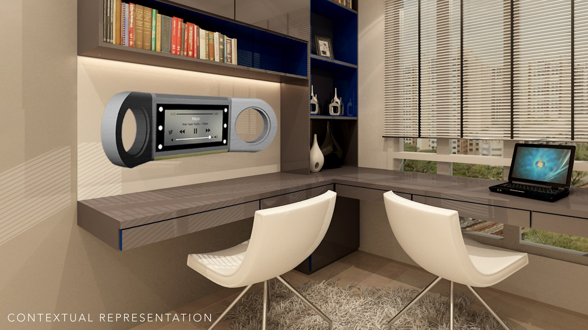
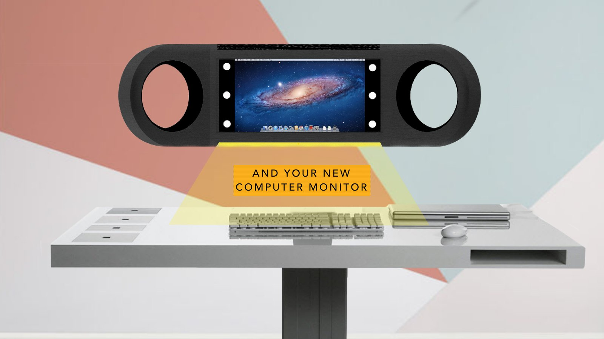
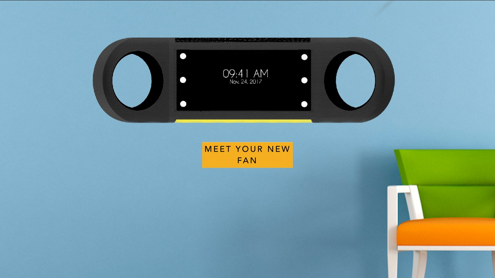
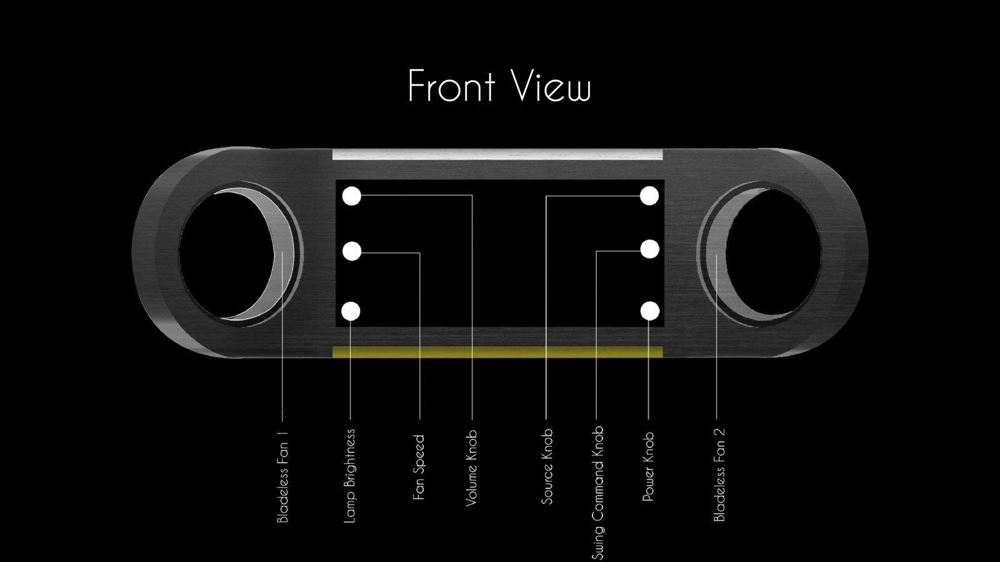
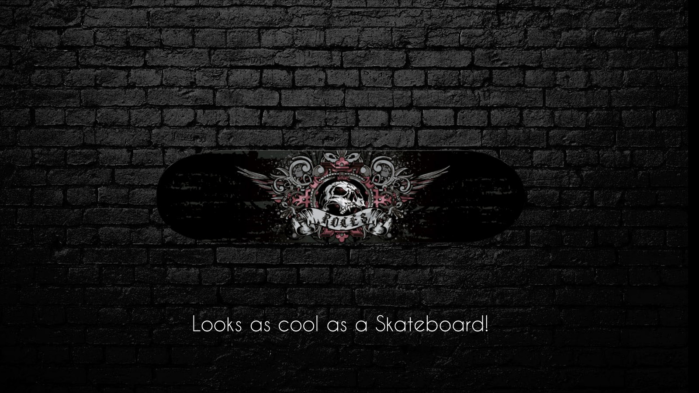

An industrial-design concept for Havells: a single sleek desk object that becomes whatever you need — a fan, a table lamp, a computer monitor, a music player, a personal assistant — and then mounts on the wall, cool as a skateboard, when you're done.

The brief imagined someone with a small desk and a big pile of gadgets — a fan, a lamp, a monitor, a speaker, a voice assistant — each taking space and adding clutter. The concept folds all of them into one object: a low, symmetrical body with two open rings and a central screen.
It earns its place by doing several jobs from the same footprint, and by being good-looking enough that you'd want it out, not hidden.




Two rings, a screen, and air through the middle.
The silhouette is deliberately board-like — a long, low slab with a circular opening at each end and a screen between them. The openings are the fan; the screen is the monitor and the assistant's face; speakers and controls hide in the body. A back-view airflow study and a component-placement layout work out how it all actually fits.
Offered in brushed aluminium, piano black and white, it's meant to read as a premium object rather than a gadget. The closing idea makes the attitude explicit: lift it off the desk and it hangs on the wall like a skateboard — utility that's also a thing you'd show off.